Axel Cruz
Computer Sciences - ICE191 Software Architechture
Computer Sciences - ICE191 Software Architechture
Work in progress!
a) To create a bucket, first you must be registered with Amazon S3 and have a valid Amazon Web Services Access Key ID to authenticate requests.
Anonymous requests are never allowed to create buckets. Also by creating the bucket, you become the bucket owner.
Keep in mind that NOT EVERY STRING IS AN ACCEPTABLE BUCKET NAME. For more information on bucket naming restrictions visit Bucket naming rules.
Here, we are going to create a bucket using the AWS CLI, also the id and credentials we are using are already configured.
For more information on aws credentials see quick setup guide.
b) Having all setup files configured, we proceed to open the terminal and use the following command to create the bucket:
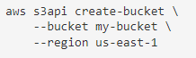
Where --bucket refers to the attribute and my-bucket name has to be replaced with your bucket's name. Then --region is the attribute for the region of your bucket, here we are using
region us-east-1, which is the region where our credentials are configured.
Also, here we using command aws s3api instead of just aws s3, the main reason is because we need to call the AWS API so we can do another operations on S3 that come from other webservices, such as
uploading and downloading objects, manage our bucket and controlling the acceses to the S3 resources, and aws s3 only provieds simple operations such as storing backups, user-generated content and static assets.
c) After creating the bucket we get the following output:
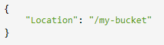
Which shows you where is the bucket located, or the endpoint of your bucket.
d) Now you need to setup the bucket access policie, this is because when you get your bucket's website, it is publicly accessible and people can see and access your bucket's webite from anywhere using an endpoint.
For this, there 2 ways to setup the bucket policy file. The first one is creating calling the aws command and passing as JSON like text as an argument, directly on the cli. The second way is creating a JSON file
with the policy settings and then calling the file using the aws command. We are going to use the second way.
First we create a JSON file with the following information:
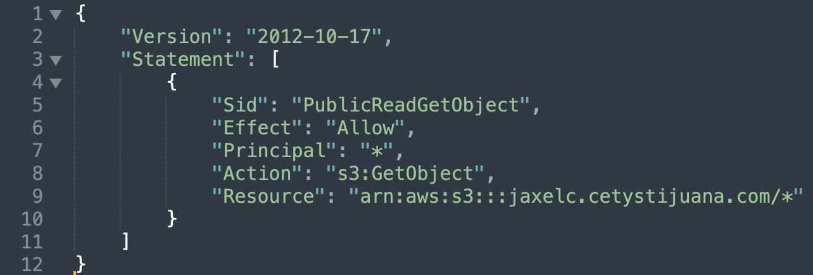
This information is necessary to setup the policies for your bucket, it is necessary because if you don't have policy permissions, Amazon S3 returns a 403 Access Denied error.
If you have the correct permissions, but you are not using an identity that belongs to the bucket owner's account, Amason S3 returns a 405 Method Not Allowed error. So this settings are needed in order to do operations
inside your bucket.
In the JSON file, we allow to publicly read objects in the bucket, this is needed for the bucket's website to be publicly accessed; the effect is set to allow, to allow this, and in Principal we define "*" for everythin
in the bucket; then we select what operation is to be allowed in the S3 bucket, this is set in the Action property; and finally we set the Resource, which is our S3 bucket, in this case my bucket's name is jaxelc.cetystijuana.com.
Note that there is a "/*" at the end, this specifies that we are setting the policy for every object, or content, inside the bucket.
e) Now we need to put the policy into the bucket, calling the JSON file just created. Use the following command:
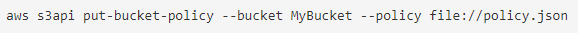
To check our policy, we use the following command:
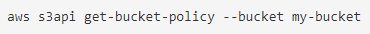
my-bucket should be replaced with bucket's name, in this case my bucket is named jaxelc.cetystijuana.com
You should get the following output with the policy settings:
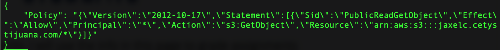
f) Now that the bucket has public access permissions, it is necessary to set the website configuration, this is the main html and 404 files. Use the following command:
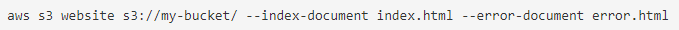
Here, my-bucket refers to your bucket's name.
g) Next, create a directory that will be used to store all website's files (htmls,css,js,etc.).
h) In the CLI navigate through the folde you created for the website's files, and sync those files to your website's name, and the use the bucket's endpoint, obtained in step c, and see your bucket's website.
Use the following command to sync your files to your bucket:
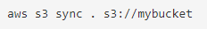
The dot means the folder you navigated to in the CLI, and the sync command updates any files to the destination, in this case, sync follows this syntax (origin, destination).
This means that we are uploading files from our folder, which contains the htmls, css, etc., to the bucket.
To link a subdomain of a parent domain, we use AWS webservice Route53. AWS Route53 is a highly available and scalable Domain Name System web service. It connects user requests to internet applications
running on AWS or on-premises. This help to link subdomain to existing domains. To do this there are some steps that need to be followed. REMEMEBER that a valid Amazon Web Services account is needed in
order to access Route53 services. There are some ways to link a subdomain, here we are going to use the AWS CLI.
a) We are going to use the change-resource-record-sets command so we can create, change o delete a resource set, which contains authoritative DNS information for a specified domain name or subdomain name.
For example, you can use ChangeResourceRecordSets to create a resource set that routes traffic for text.example.com to a web server that has an IP addres of 192.0.2.44.
This command creates a resource record set using the hosted-zone-id of the main domain and uses settings formatted in a JSON file.
b) First create a JSON file to setup the resource record sets:
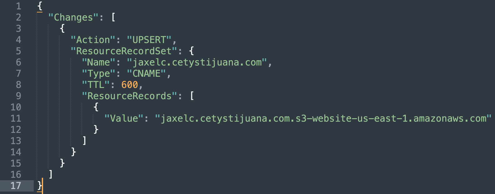
In this JSON file, there are some options, the key Action, could be either CREATE, UPSERT or DELETE, we use CREATE to create a new resource record set. UPSERT is used to update and existing record set.
Then specify the Resource settings:
1) the name of your new subdomain.
2) the is set to CNAME, this maps DNS queries for the name of the current record to another domain or subdomain.
3) The TTL (Time to live) is the resource record cache in seconds. Amazon Route53 uses this value for the alias target.
4) Finally set the record set value, which your subdomain will be redirected from, this is the bucket's website link that we got when we created the bucket.
c) With the JSON file created, we use the following command to now create the resource record set, and we will link it to a Hosted Zone. NOTE THAT: The hosted zone must be already configured by the account's owner
in which you are working. For more information about working and create a hosted zone go to Creating a Hosted Zone using AWS CLI.
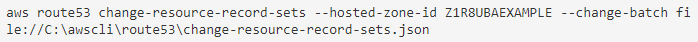
The hosted zone id SHOULD be replaced with the hosted zone you are working into and then we call the JSON file we created with the resource record set settings to create a request for a Route53 traffic redirection service.
The output should be something like this:
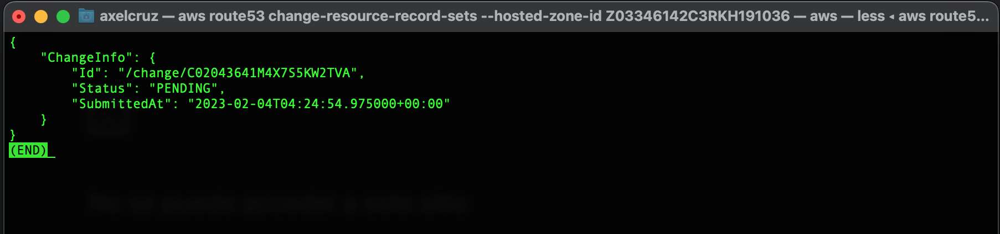
This prompts a request to use the AWS Route53 service to redirect domains and the status PENDING means that the request is processing. Once is done, the status changes to INSYNC, meaning that the new subdomain
is ready to use.
d) To check if your resource record set has been registered to the hosted zone resources you are working into, the following command prompts the list of all resource record set registered.
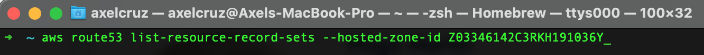
If you don't see your subdomain working right away, wait a few minutes so the pending request in synced in.
To add yourself to the students section in the cetystijuana.com website, first you need to download, or sync in, all the files contained in that bucket, so you can edit them, and the upload the files.
Here we are just going to edit the HTML file to add a div with our information, and the add our image to the correspongin folder.
a) To download files from a S3 bucket, we are going to use the AWS CLI commmand SYNC.
This commands syncs directories and S3 prefixes. Recursively copies new and updated files from the source directory to the destination. Only creates folder in the destination if they contain one or more files.
The command sync follows the syntax (origin, destination).
b) Before sync files from the bucket, I recommend creating a directory to store all those files. After creating the directory, navigate through it in the CLI and sync the files form the bucket to the directory.
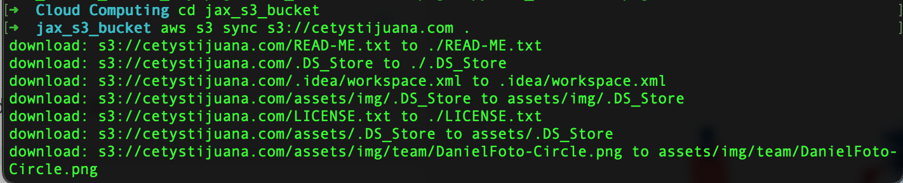
These are just some files that were downloaded from cetystijuana.com bucket.
c) Now, just go to that folder in your system and edit the index.html file to add yourself and sync the edited files back into the S3 bucket.
Here I added my self to the cetystijua.com website:
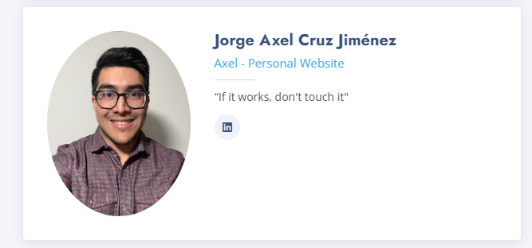
IMPORTANT: Be careful when uploading files to the bucket, since this a collaborative bucket, files may be updated and synced up while you are editing your. This might run into files conflicts because of the last modified time of the source'
is older than the newer modified time of the destination.
To create an entry in the DynamoDB Students table, need to use the following model:
{
"id": "matricula",
"full_name": "NAME",
"persoinal_website": "s3_url"
}
There are two main ways to put an item into a dynamobd table, the first one is to call a JSON file that follows the rules for object type items, the second one is type in the command following by the item string syntax. Here we are
using the second method, just using the command followed by the correct syntax to add the item.
a) To put an item using that model, use the following command:
aws dynamodb put-item --table-name Students --item '{"id": {"S": "031973"}, "full_name": {"S": "Jorge Axel Cruz Jimenez"}, "personal_website": {"S": "jaxelc.cetystijuana.com"}}'
- Using put-item creates a new item, or replaces an old item with a new item. If the item that has the same primary key as the new item already exists in the specified table,
the new item completely replaces the existing item.
- The --table-name specifies the name of the table that the item is going to be put in. In this case the table's name is Students
- The --item is the attribute of dynamobd to specify the item to pun into the table.
- Finally, a syntax for a object like item need to follow a syntax, so here we specify the keys, an the values are denoted with a "S" which denotes that the value is a string.
b) Now, just check if your item is in the dynamobd table, use the following command. It will prompt all the existing items in the table:
aws dynamodb scan --table-name Students
The scan method will iterate through all items in the table, returning all items and their values.
I strongly agree with Martin Fowler about how scoiety categorize software developers and how their role is thought-provoking depoending on the area they are involved.
Also, many of software developers can't help themselves in this matters, because some of them, the majority of them, are introvert people, and it is not their fault, it's just how they are,
and sometimes companies tend to treat them in certain way just having that in mind, this means that developers are something that just "monkeys" that follow orders to type any code they are given. Also, this affects the way that software developers share their ideas to each other. Sometimes an idea
begins by watching or hearing others ideas, and this is also how their are, maybe they think that their ideas may be not that good to be heard, when it could be a awesome idea.
I also think that it is important to know that there is good and evil, and it also exists in the software industry, and software developers should be aware and kind with their end-users and just trick people
for their own benefit, like the case of black patterns. And this is because EVERY software that it developed will impact the evironment that is the software is developed into.
I think that independently of anyone's occupation, anyone should be able to be recognize as a high entity in their area, in comparison with other areas in society such as medicine, doctors are
highly recognize and respected just because they are doctors, and it is sad that software developers are not a recognizable in their area as they should